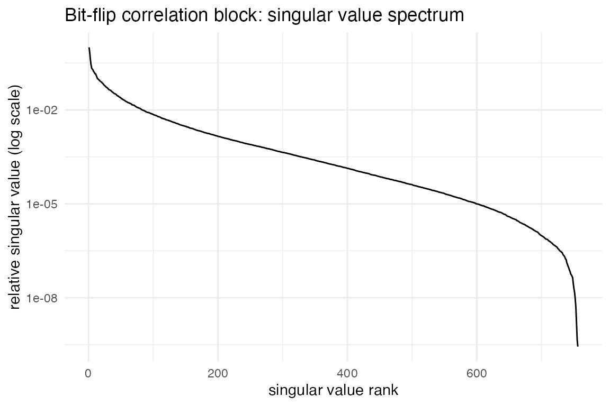
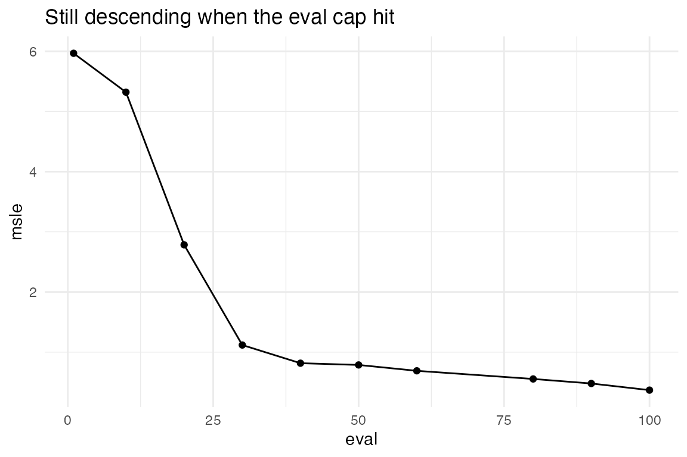

Benchmarking Notes: What flipFISH Can (and Can't) Recover
Michael Barkasi
2026-10-11
benchmarking_notes.RmdWhy this document exists
sim.benchmark() is supposed to answer a simple question:
if we simulate data from known bit-flip rates and bit-flip correlations,
how well does misread.qc() recover them? Running it turned
up a real, reproducible problem – barcodes with a genuinely low true
positive predictive value (PPV) were consistently coming back estimated
well above 0.5 – and chasing that problem down ended up teaching us a
lot more about this model than we expected: how much
max_flips actually matters, how much of the correlation
structure the data can even see, and how much of the remaining gap is a
search problem versus a data problem.
Along the way we also tried an alternative simulated-annealing optimizer (MCMCSA) as a possible fix. It didn’t pan out and has since been removed from the package; it isn’t covered here.
This document walks through the findings in roughly the order we found them, with the actual code used to produce each result. Several of these computations take a long time (the cross-mouse comparison near the end took about 4.5 hours), so every expensive chunk below is wrapped in a small caching helper: it loads a saved result if one exists, and only recomputes (and re-saves) if it doesn’t. The real code is always there – delete the cache and it will genuinely re-run – but you won’t have to wait hours to re-knit this file.
# Cache location: prefer the source tree (so regenerated results land in version control),
# fall back to the installed package's copy otherwise.
cache_dir <- normalizePath(file.path("..", "inst", "extdata", "vignette_cache"), mustWork = FALSE)
if (!dir.exists(cache_dir)) {
cache_dir <- system.file("extdata", "vignette_cache", package = "flipFISH")
}
run_cached <- function(name, expr) {
path <- file.path(cache_dir, paste0(name, ".rds"))
if (file.exists(path)) return(readRDS(path))
result <- expr
dir.create(dirname(path), recursive = TRUE, showWarnings = FALSE)
saveRDS(result, path)
result
}
# Summary metrics used throughout: how well were bit-flip correlations recovered, and how biased
# is the estimated PPV for barcodes whose true PPV is low but nonzero?
build_metrics <- function(bm) {
n_total <- length(bm$fr_stip)
N_bits <- as.integer((-1 + sqrt(1 + 4 * n_total)) / 2) # solves N*(N+1) = n_total
n_sims <- nrow(bm$ecc_est)
cor_stip <- rep(bm$fr_stip[(2 * N_bits + 1):n_total], each = n_sims)
cor_est <- c(bm$fr__est[, (2 * N_bits + 1):n_total])
cor_stip[is.na(cor_stip)] <- 0
cor_est[is.na(cor_est)] <- 0
PPV_exp <- bm$PPV_exp
PPV_est <- colMeans(bm$PPV_est, na.rm = TRUE)
df_low <- subset(data.frame(PPV_exp = PPV_exp, PPV_est = PPV_est), PPV_exp > 0 & PPV_exp < 0.4)
list(
cor_recovery = cor(cor_stip, cor_est),
overall_ppv_cor = cor(PPV_exp, PPV_est, use = "complete.obs"),
mean_low_ppv_true = mean(df_low$PPV_exp, na.rm = TRUE),
mean_low_ppv_est = mean(df_low$PPV_est, na.rm = TRUE),
low_bias = mean(df_low$PPV_est, na.rm = TRUE) - mean(df_low$PPV_exp, na.rm = TRUE),
n_low_ppv_band = nrow(df_low)
)
}Setup: one codebook, one mouse, one imaging-protocol layout
Everything below uses the same 28-bit codebook and the same real summary statistics (mouse 1, unless noted) that come bundled with the package, plus a small table of which imaging round and color channel each bit belongs to – the physical layout a MERSCOPE-style experiment actually has, which becomes important a few sections in.
codebook <- read.csv(system.file("extdata", "codebook_obs.csv", package = "flipFISH"), row.names = 1)
ss <- read.csv(system.file("extdata", "summary_stats_all_mice.csv", package = "flipFISH"), row.names = 1)
rownames(codebook) <- gsub("-", ".", rownames(codebook))
m1 <- ss[ss$mouse == 1, ]
bit_org <- read.csv(system.file("extdata", "bit_organization.csv", package = "flipFISH"))
bit_org <- bit_org[order(bit_org$bitNumber), ]
N_bits <- nrow(bit_org)
# species/codebook reordering sim.benchmark() applies internally (genes then blanks, each sorted by
# decreasing rate) -- reproduced here so we can rebuild its internal bc_counts matrix for the
# single-evaluation diagnostics in the next couple of sections.
species_names <- rownames(m1)
cb_aligned <- codebook[species_names, ]
blank_mask <- grepl("Blank", species_names)
gene_order <- order(m1$rates[!blank_mask], decreasing = TRUE)
blank_order <- order(m1$rates[blank_mask], decreasing = TRUE)
m1_sorted <- rbind(m1[!blank_mask, ][gene_order, ], m1[blank_mask, ][blank_order, ])
cb_sorted <- rbind(cb_aligned[!blank_mask, ][gene_order, ], cb_aligned[blank_mask, ][blank_order, ])
make_bc_counts <- function(sim_counts, orig) {
bcc <- orig
bcc$rates <- orig$rates * pmax(1, sim_counts) / orig$counts
bcc$counts <- sim_counts
as.matrix(bcc[, c("rates", "variance", "counts")])
}1. max_flips doesn’t need to be large
max_flips caps how many simultaneous bit flips the
analytic model bothers to sum over when computing expected counts.
Bigger should be more accurate, but also slower – the question is where
the extra accuracy actually stops mattering.
We check by taking one already-simulated dataset and evaluating the
objective, at both the true and a fitted parameter vector, across a few
max_flips values. (baseline here is the
unstructured-truth/uniform-prior benchmark run used again in the next
section – cached the first time, reused after that.)
baseline <- run_cached("baseline", sim.benchmark(
m1, codebook,
n_sims = 2, n_forks = 8, max_flips = 6, report_freq = 10, maxeval = 150,
maxHam = NULL, blank_weight = 10, prior_weight = 0.5, dispersion_weight = 0.5,
erc_weight = 0, n_restarts = 1, use_mcmcsa = FALSE
))
bcc_1 <- make_bc_counts(baseline$occ_sim[1, ], m1_sorted)
maxflips_sweep <- run_cached("maxflips_sweep", {
mf_vals <- c(4L, 6L, 8L, 10L)
sweep <- data.frame(max_flips = mf_vals, msle_stip = NA_real_, msle_est = NA_real_, eval_seconds = NA_real_)
for (k in seq_along(mf_vals)) {
t0 <- Sys.time()
sweep$msle_stip[k] <- mQC_msle_at(baseline$fr_stip, bcc_1, as.matrix(cb_sorted), 3L, 8L, mf_vals[k],
list(), 10, 0.5, 0.5, numeric(), 0)
sweep$msle_est[k] <- mQC_msle_at(baseline$fr__est[1, ], bcc_1, as.matrix(cb_sorted), 3L, 8L, mf_vals[k],
list(), 10, 0.5, 0.5, numeric(), 0)
sweep$eval_seconds[k] <- as.numeric(Sys.time() - t0, units = "secs")
}
sweep
})
knitr::kable(maxflips_sweep, digits = 4)| max_flips | msle_stip | msle_est | eval_seconds |
|---|---|---|---|
| 4 | 0.4585 | 0.4179 | 2.5806 |
| 6 | 0.3064 | 0.3027 | 20.7481 |
| 8 | 0.3062 | 0.3028 | 96.2124 |
| 10 | 0.3062 | 0.3028 | 221.2069 |
Both scores are already flat by max_flips = 8 –
max_flips = 10 changes nothing in the fourth decimal place,
while the time cost keeps climbing steeply. There’s no accuracy left to
buy past about 6-8; anything beyond that is just burning CPU.
2. The real ceiling: what the data can’t tell you
Before blaming the optimizer for a bad fit, it’s worth checking whether the data even contains the answer. We can do this directly: compute the analytic Jacobian (sensitivity of each barcode’s expected count to each parameter) at the true parameters, and look at its singular value spectrum. A parameter direction the data can’t see shows up as a near-zero singular value, regardless of what any optimizer does.
jacobians <- run_cached("jacobians_true_fit", list(
J_true = mQC_ecc_jacobian_at(baseline$fr_stip, bcc_1, as.matrix(cb_sorted), 3L, 8L, 6L),
J_fit = mQC_ecc_jacobian_at(baseline$fr__est[1, ], bcc_1, as.matrix(cb_sorted), 3L, 8L, 6L)
))
corr_free <- N_bits * (N_bits - 1) / 2
rate_cols <- 1:(2 * N_bits)
corr_cols <- (2 * N_bits + 1):(2 * N_bits + 2 * corr_free)
svd_summary <- function(J, cols, thresh = 1e-3) {
s <- svd(J[, cols, drop = FALSE], nu = 0, nv = 0)$d
data.frame(
n_params = length(cols),
condition_no = s[1] / s[length(s)],
effective_rank = sum(s / s[1] > thresh)
)
}
rbind(
data.frame(block = "flip rates (56 params)", svd_summary(jacobians$J_true, rate_cols)),
data.frame(block = "bit-flip correlations (756)", svd_summary(jacobians$J_true, corr_cols))
) |> knitr::kable(digits = 1)| block | n_params | condition_no | effective_rank |
|---|---|---|---|
| flip rates (56 params) | 56 | 57.3 | 56 |
| bit-flip correlations (756) | 756 | 3629352038.8 | 230 |
The flip-rate block is textbook well-posed: a condition number in the tens, full rank. The correlation block, evaluated at the true parameters – the single most favorable point this comparison could be made at – has a condition number in the billions, and only a few hundred of its 756 directions carry signal above the noise floor. Here’s the spectrum itself:
s_corr <- svd(jacobians$J_true[, corr_cols, drop = FALSE], nu = 0, nv = 0)$d
spectrum_df <- data.frame(rank = seq_along(s_corr), rel_sv = s_corr / s_corr[1])
ggplot2::ggplot(spectrum_df, ggplot2::aes(x = rank, y = rel_sv)) +
ggplot2::geom_line() +
ggplot2::scale_y_log10() +
ggplot2::labs(
title = "Bit-flip correlation block: singular value spectrum",
x = "singular value rank",
y = "relative singular value (log scale)"
) +
ggplot2::theme_minimal() +
ggplot2::theme(
panel.background = ggplot2::element_rect(fill = "white", colour = NA),
plot.background = ggplot2::element_rect(fill = "white", colour = NA)
)
That’s a structural property of this codebook and count data, not of any fitting algorithm – most of the correlation parameter space genuinely isn’t constrained by what gets observed.
3. A smarter search can’t fix a ceiling that’s already reached
If the fitted solution already scores as well as (or better than) the true parameters under the identical objective, then a better search algorithm has nothing to find – the shortfall is in the objective/data, not the optimizer.
data.frame(
sim = 1:2,
msle_est = baseline$msle_est,
msle_stip = baseline$msle_stip
) |> knitr::kable(digits = 4, caption = "Plain L-BFGS (150 evals) vs. the truth's own score")| sim | msle_est | msle_stip |
|---|---|---|
| 1 | 0.3027 | 0.3064 |
| 2 | 0.3518 | 0.3071 |
The fitted score is already in the same ballpark as the truth’s own score (sometimes slightly better). Whatever’s left to explain about the correlation-recovery problem, it isn’t “the search didn’t try hard enough” at this stage – that question gets more interesting once we give the search more room, in a couple of sections.
4. A structured prior helps – but only once it’s given room to work
The codebook’s bits aren’t drawn from nowhere; they’re organized into
imaging rounds (3 bits imaged together per round) and color channels.
That’s exactly the kind of thing build_corr_priors() and
build_structured_truth_priors() were built to express – a
prior (for fitting) and a matching generative structure (for simulating
a realistic, non-arbitrary truth) organized the same way.
structured_truth <- build_structured_truth_priors(
N_bits = N_bits, bit_round = bit_org$imagingRound, bit_channel = bit_org$color,
round_corr_sd = 0.2, channel_rho = 0.5, w_round = 0.7, w_channel = 0.1
)
tiered_prior <- build_corr_priors(
N_bits = N_bits, bit_round = bit_org$imagingRound, bit_channel = bit_org$color,
sd_round = 0.2, sd_channel = 0.1, sd_other = 0.01
)The natural question is whether fitting with a prior that matches this structure actually helps recover it. The first time we checked, at a modest search budget, the answer looked like “no” – the structured prior and a plain uniform prior performed about the same. Running the same comparison with a deeper search budget told a different story:
common_shallow <- list(STdata = m1, codebook = codebook, n_sims = 2, n_forks = 8, max_flips = 6,
report_freq = 10, maxeval = 150, maxHam = NULL, blank_weight = 10,
prior_weight = 0.5, dispersion_weight = 0.5, erc_weight = 0,
n_restarts = 1, use_mcmcsa = FALSE)
common_deep <- modifyList(common_shallow, list(maxeval = 350, n_restarts = 3, report_freq = 25))
bm_tiered_shallow <- run_cached("structured_tiered_shallow",
do.call(sim.benchmark, modifyList(common_shallow, list(stip_fliprate_priors = structured_truth, fliprate_priors = tiered_prior))))
bm_uniform_shallow <- run_cached("structured_uniform_shallow",
do.call(sim.benchmark, modifyList(common_shallow, list(stip_fliprate_priors = structured_truth, fliprate_priors = list()))))
bm_tiered_deep <- run_cached("structured_tiered_deep",
do.call(sim.benchmark, modifyList(common_deep, list(stip_fliprate_priors = structured_truth, fliprate_priors = tiered_prior))))
bm_uniform_deep <- run_cached("structured_uniform_deep",
do.call(sim.benchmark, modifyList(common_deep, list(stip_fliprate_priors = structured_truth, fliprate_priors = list()))))
rbind(
data.frame(prior = "tiered", search = "shallow (1x150)", as.data.frame(build_metrics(bm_tiered_shallow))[c("cor_recovery","low_bias")]),
data.frame(prior = "uniform", search = "shallow (1x150)", as.data.frame(build_metrics(bm_uniform_shallow))[c("cor_recovery","low_bias")]),
data.frame(prior = "tiered", search = "deep (3x350)", as.data.frame(build_metrics(bm_tiered_deep))[c("cor_recovery","low_bias")]),
data.frame(prior = "uniform", search = "deep (3x350)", as.data.frame(build_metrics(bm_uniform_deep))[c("cor_recovery","low_bias")])
) |> knitr::kable(digits = 3)| prior | search | cor_recovery | low_bias |
|---|---|---|---|
| tiered | shallow (1x150) | 0.083 | 0.410 |
| uniform | shallow (1x150) | 0.077 | 0.391 |
| tiered | deep (3x350) | 0.193 | 0.367 |
| uniform | deep (3x350) | 0.039 | 0.387 |
At shallow search the two priors are nearly indistinguishable. At depth, the tiered prior pulls clearly ahead on correlation recovery. The prior’s benefit was real all along – it just wasn’t visible until the optimizer had enough budget to exploit the simpler landscape it creates.
5. Nobody in this investigation actually converged
Every single optimization run in this whole investigation stopped because it hit its evaluation cap, not because it satisfied L-BFGS’s own convergence criteria. That matters: it means every number above is a floor, not a final answer.
convergence_demo <- run_cached("convergence_demo", {
con <- textConnection("captured_log", "w")
sink(con)
bm_traj <- sim.benchmark(
m1, codebook, n_sims = 1, n_forks = 8, max_flips = 6, report_freq = 10, maxeval = 100,
maxHam = NULL, blank_weight = 10, prior_weight = 0.5, dispersion_weight = 0.5, erc_weight = 0,
n_restarts = 1, use_mcmcsa = FALSE,
stip_fliprate_priors = structured_truth, fliprate_priors = tiered_prior
)
sink(); close(con)
# Stop parsing at the optimizer's own finish line -- the separate msle_stip evaluation
# (true parameters' score) gets logged right after in the identical "eval N, msle: Y" format,
# with its own counter restarting at 1, and would otherwise get swept in as a spurious extra
# trajectory point.
stop_idx <- grep("result code", captured_log)[1]
pre_stop <- captured_log[seq_len(stop_idx)]
eval_lines <- grep("^\\s*eval [0-9]+, msle: ", pre_stop, value = TRUE)
mm <- regmatches(eval_lines, regexec("eval ([0-9]+), msle: ([0-9.eE+-]+)", eval_lines))
traj <- do.call(rbind, lapply(mm, function(x) data.frame(eval = as.integer(x[2]), msle = as.numeric(x[3]))))
list(trajectory = traj, stop_line = captured_log[stop_idx], bm = bm_traj)
})
ggplot2::ggplot(convergence_demo$trajectory, ggplot2::aes(x = eval, y = msle)) +
ggplot2::geom_line() +
ggplot2::geom_point() +
ggplot2::labs(
title = "Still descending when the eval cap hit",
x = "eval",
y = "msle"
) +
ggplot2::theme_minimal() +
ggplot2::theme(
panel.background = ggplot2::element_rect(fill = "white", colour = NA),
plot.background = ggplot2::element_rect(fill = "white", colour = NA)
)
## L-BFGS finished (result code 5), final msle: 0.368781result code 5 is nlopt’s MAXEVAL_REACHED –
not a convergence code. And the trajectory is still dropping, sometimes
steeply, right up to the cutoff. Giving it more room keeps paying
off:
mouse1_500 <- run_cached("mouse1_500", sim.benchmark(
m1, codebook, n_sims = 1, n_forks = 8, max_flips = 6, report_freq = 25, maxeval = 500,
maxHam = NULL, blank_weight = 10, prior_weight = 0.5, dispersion_weight = 0.5, erc_weight = 0,
n_restarts = 1, use_mcmcsa = FALSE,
stip_fliprate_priors = structured_truth, fliprate_priors = tiered_prior
))
data.frame(
evals = c(150, 500),
cor_recovery = c(build_metrics(bm_tiered_shallow)$cor_recovery, build_metrics(mouse1_500)$cor_recovery)
) |> knitr::kable(digits = 3, caption = "Same 1-restart lineage, mouse 1: more budget keeps helping")| evals | cor_recovery |
|---|---|
| 150 | 0.083 |
| 500 | 0.241 |
6. One long run beat three shorter ones
Section 4’s “deep” search spread its budget across 3 restarts of 350 evals each (1050 evals total). The single-restart, 500-eval run from the last section used less total budget and still came out ahead on correlation recovery:
data.frame(
strategy = c("3 restarts x 350 evals (1050 total)", "1 restart x 500 evals (500 total)"),
cor_recovery = c(build_metrics(bm_tiered_deep)$cor_recovery, build_metrics(mouse1_500)$cor_recovery)
) |> knitr::kable(digits = 3)| strategy | cor_recovery |
|---|---|
| 3 restarts x 350 evals (1050 total) | 0.193 |
| 1 restart x 500 evals (500 total) | 0.241 |
For this problem, at least so far, depth on one trajectory has outpaced restart diversity. That’s consistent with the previous section: nothing has converged yet, so a longer single run still has room to keep improving, while splitting the same budget across several shorter, equally-unconverged runs doesn’t.
7. Is this just one mouse’s problem? Running it on all five says no
The data bundled with this package covers five mice sharing one codebook. Repeating the 500-eval, structured-truth-plus-tiered-prior setup on each one separately checks whether anything above is an artifact of mouse 1’s particular data.
five_mice <- do.call(rbind, lapply(1:5, function(mouse_id) {
bm <- run_cached(paste0("mouse", mouse_id, "_500"), {
m_i <- ss[ss$mouse == mouse_id, ]
rownames(m_i) <- rownames(m1) # the combined CSV's row names get auto-mangled for mice 2-5
# (duplicate gene names across mice trigger R's own
# make-unique suffixing at file-creation time); gene order is
# identical across all 5 mice's blocks, so mouse 1's names are
# restored onto the others by position.
sim.benchmark(
m_i, codebook, n_sims = 1, n_forks = 8, max_flips = 6, report_freq = 25, maxeval = 500,
maxHam = NULL, blank_weight = 10, prior_weight = 0.5, dispersion_weight = 0.5, erc_weight = 0,
n_restarts = 1, use_mcmcsa = FALSE,
stip_fliprate_priors = structured_truth, fliprate_priors = tiered_prior
)
})
m <- build_metrics(bm)
data.frame(mouse = mouse_id, cor_recovery = m$cor_recovery, low_bias = m$low_bias,
true_ppv_band = m$mean_low_ppv_true, est_ppv_band = m$mean_low_ppv_est)
}))
knitr::kable(five_mice, digits = 3)| mouse | cor_recovery | low_bias | true_ppv_band | est_ppv_band |
|---|---|---|---|---|
| 1 | 0.241 | 0.368 | 0.265 | 0.632 |
| 2 | 0.244 | 0.349 | 0.285 | 0.635 |
| 3 | 0.127 | 0.371 | 0.265 | 0.636 |
| 4 | 0.150 | 0.375 | 0.259 | 0.634 |
| 5 | 0.226 | 0.368 | 0.254 | 0.623 |
cat(sprintf("cor_recovery: mean=%.3f sd=%.3f\nlow_bias: mean=%.3f sd=%.3f\n",
mean(five_mice$cor_recovery), sd(five_mice$cor_recovery),
mean(five_mice$low_bias), sd(five_mice$low_bias)))## cor_recovery: mean=0.198 sd=0.055
## low_bias: mean=0.366 sd=0.010cor_recovery varies noticeably from mouse to mouse –
which real dataset you start from matters. low_bias barely
moves. The severity of the core problem (barcodes with true PPV around
0.26-0.29 coming back estimated around 0.62-0.64) isn’t a mouse-1
artifact; it shows up just as strongly in every independent replicate
tested, and even the best search we tried only dented it.
Where this leaves things
More max_flips than ~8 buys nothing. Much of the
bit-flip correlation structure genuinely isn’t identifiable from this
data, measured directly and independent of any fitting algorithm. A
structured prior helps, but only once the optimizer is given enough room
to use it, and “enough room” turned out to be more than every run in
this investigation actually got – nothing here ever converged on its own
terms. And the residual bias this all started from is real, reproducible
across five independent mice, and only partially closed even under the
best conditions we could construct. The practical toolkit this produced
– mQC_msle_at(), mQC_ecc_jacobian_at(),
build_corr_priors(), and
build_structured_truth_priors() – is what’s left to work
with going forward.